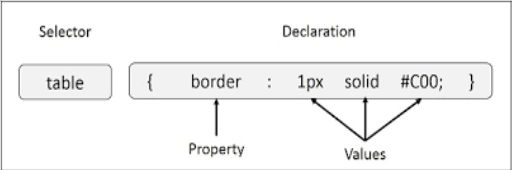

Weekly Notes
- Digital Information: Data stored on computers or similar computer readable forms
- Reproducible, Easily Shareable, Flexible, Modifiable, Hard to intercept
- Quantity - Commonly found in very large datasets, everything gathers data on users, and more things are integrating with the web
- Computers are data processing devices
- Input, process, store and output data
- Hardware
- External - I/O Devices: Mouse, Monitor, Printer, Microphone
- Internal - Process and store data: Drives, Processors, RAM
Outside Readings
- CSS
- Cascading Style Sheets - define how html elements are displayed
- Used for global definitions, reduces load times, offers more customizability, and maintains concistancy throuhgout a series of conected pages
- Definitions concist of a selector, followed by properties that you want to change, and the values you want to change them too

- Can be attached inline to change a specific line, interally to change a specific page, or externally for use over many pages
- Precedence: Inline > Internal > External > Browser default
- Common use for CSS is to order sections, or to define spacing for elements
- Ex. In HTML: class = "left" In CSS: .class{float: left;}
- Padding, Margin, and Border can all be used to increase spacing
Outside Reading